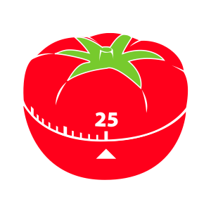

PomToDoro
The Pomodoro Technique is a time management method developed by Francesco Cirillo in the 1980s. The technique uses a timer to break
down work into intervals traditionally 25 minutes in length, separated by short breaks. The idea is that frequent breaks can
improve mental agility.
Just add your tasks to the list, hit enter and start the countdown. Once the timer gets to 0, take a short break, relax your
mind, walk around, eat some food or drink some water.
Lather, rinse, repeat until all your tasks are complete.